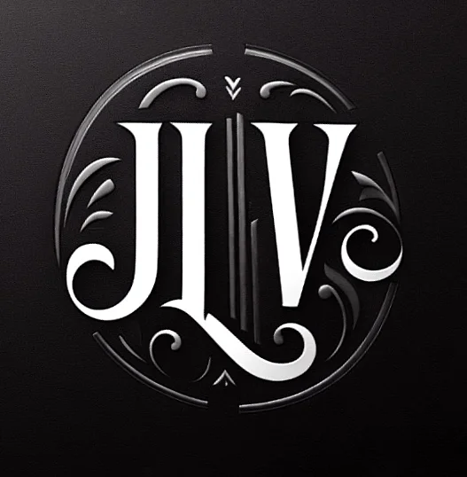
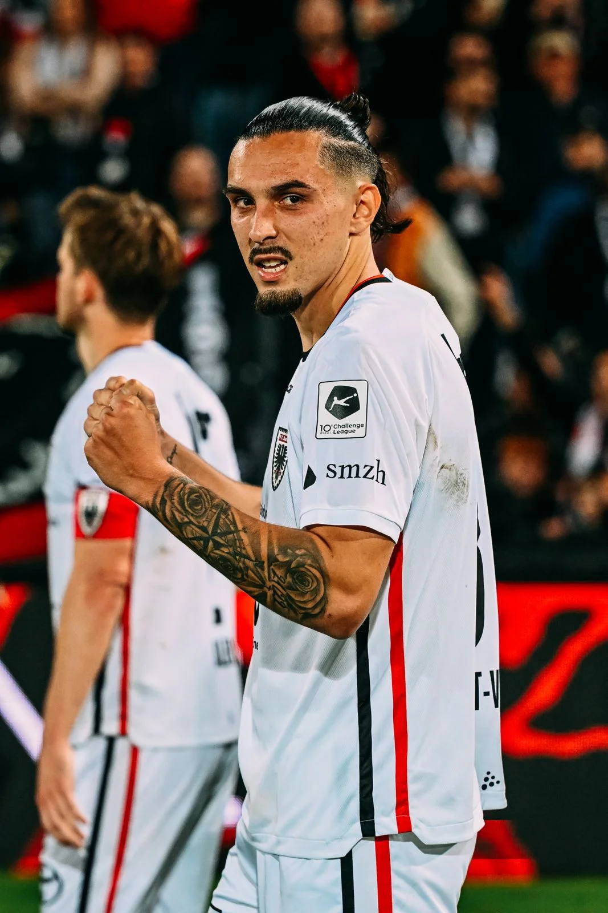
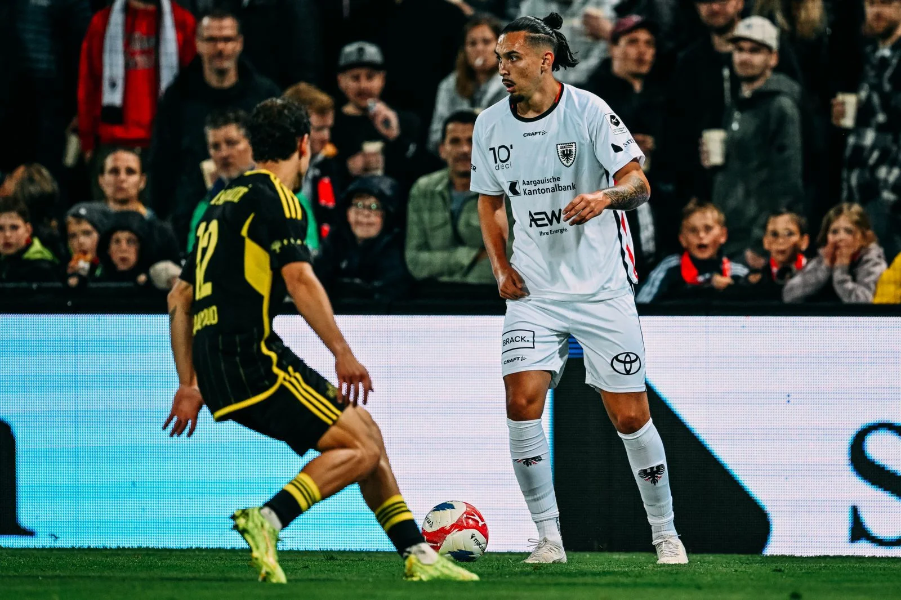
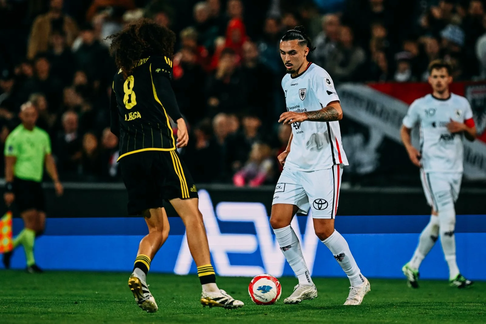
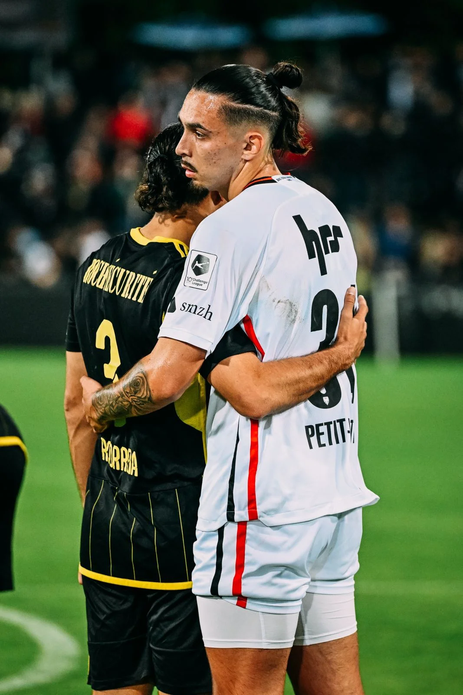
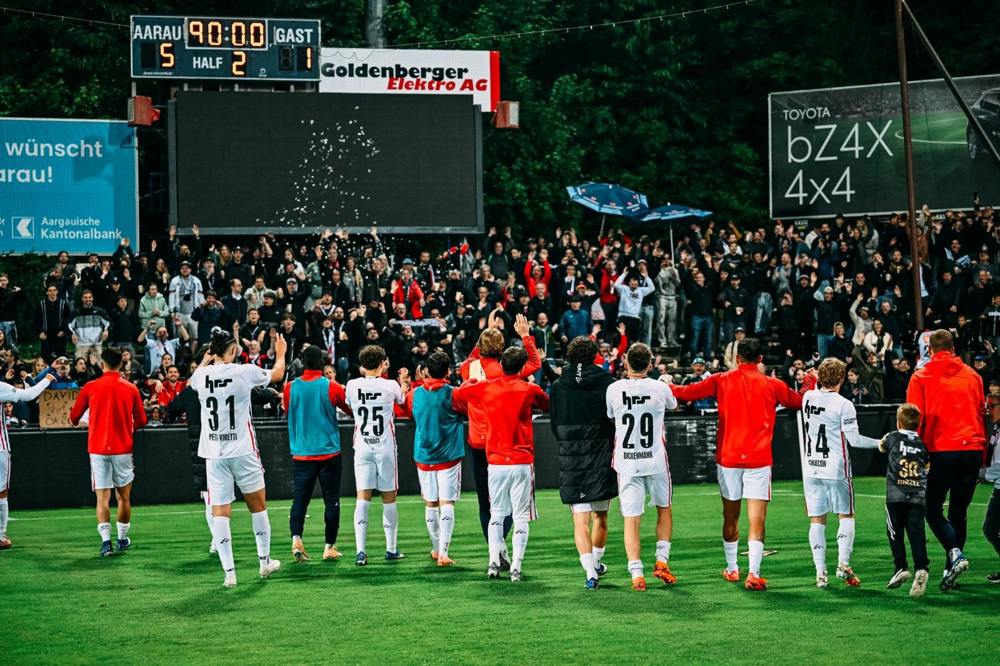
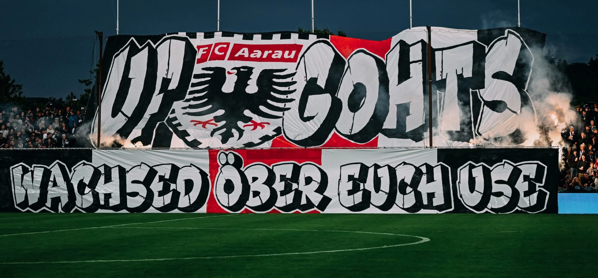
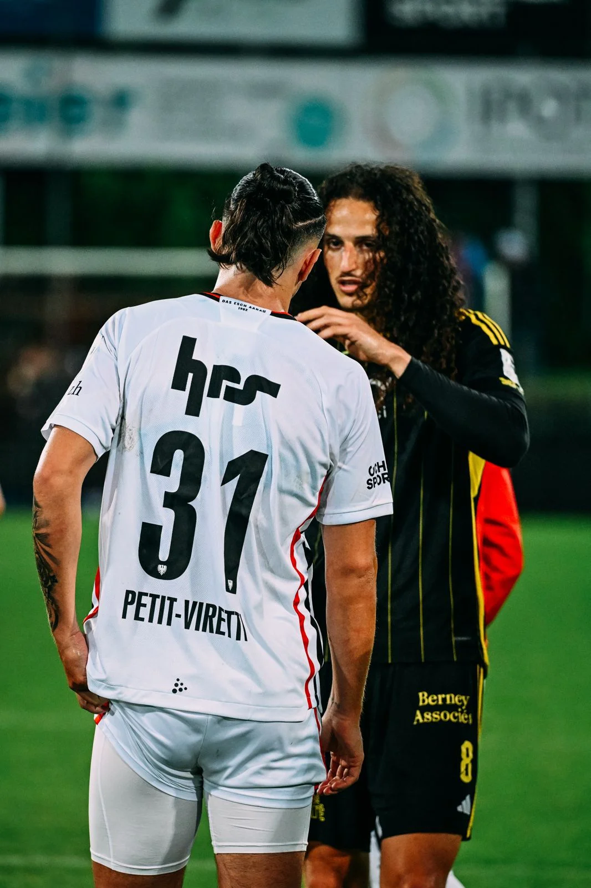
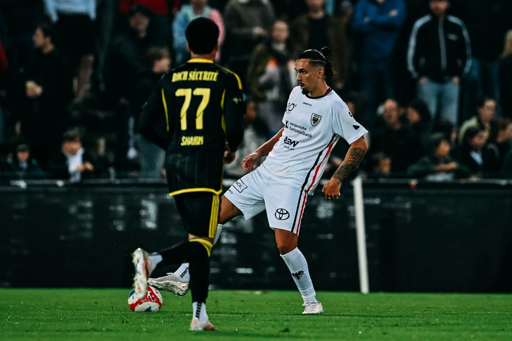
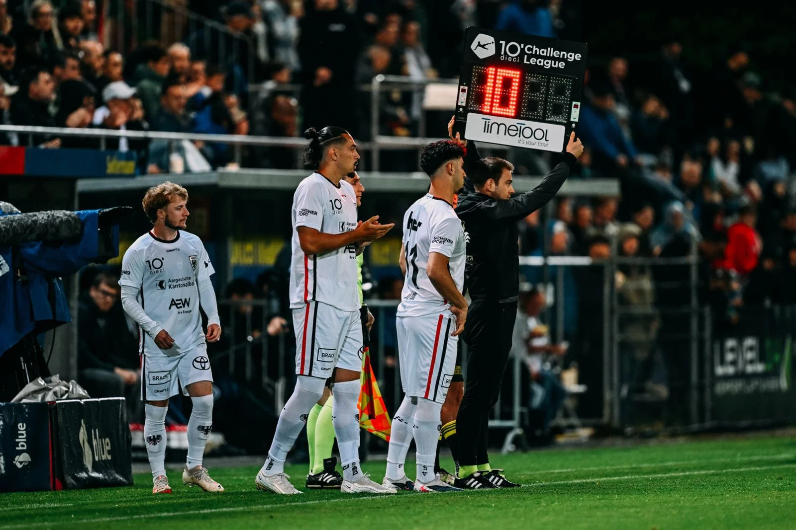

Victor Petit-Viretti et ses coéquipiers du FC Aarau écrasent Stade Nyonnais 5 à 1. Direction le Rheinpark de Vaduz pour une finale absolue.
Vendredi soir au Brügglifeld d'Aarau, devant 7 277 spectateurs en feu, le FC Aarau a livré une démonstration de force offensive face au Stade Nyonnais, dernier de la Challenge League. Une victoire 5 à 1 qui ne reflète pas entièrement la domination aargauienne — et surtout, cinq buts inscrits avant la pause.
Dès la 12ème minute, Daniel Afriyie ouvre le score sur contre-attaque. Valon Fazliu, magicien de la soirée avec trois passes décisives, orchestre le jeu avec une fluidité redoutable. Un but contre son camp (17'), Frokaj d'une frappe chirurgicale à 20 mètres (33'), Jäckle (39') et Filet (45') complètent la fusillade. 5 à 0 à la pause.
Les Schwarz-Weißen se sont montrés généreux ce soir-là — Nyon réduisant l'écart à la 35ème minute — mais rien n'a pu arrêter la machine aarauienne. Une performance collective qui projette le club de l'Argovie vers un choc décisif contre le leader FC Vaduz, lundi 11 mai.
V. Fazliu — 3 passes décisives (magicien de la soirée)








| # | Club | MJ | Pts | DB |
|---|---|---|---|---|
| 1 | FC Vaduz | 34 | 78 | +33 |
| 2 | FC Aarau ● | 34 | 76 | +29 |
| 3 | Yverdon Sport | 34 | 63 | +25 |
| 4 | Neuchâtel Xamax | 34 | 46 | -3 |
| 5 | Lausanne-Ouchy | 34 | 44 | +5 |